BinEd is free and open source hexadecimal stand-alone viewer/editor written in Java.
Manual is under construction!
See. https://github.com/exbin/bined/wiki for sources or to fix errors
Example look of the application's GUI
BinEd is available in multiple variants including plugins for other applications.
This manual describes stand-alone editor application. For other variants please visit project's website:
Application can be executed on any platform supported by Java 8, including Microsoft Windows, Mac OS / Mac OSX, variants of Linux or BSD and application should have the same minimum requirements as Java. It might be also ok to use any newer version of the Java.
For instruction on how to install Java on your operating system please search on Internet or visit:
Application is available on the project's website:
https://bined.exbin.org/editor
To get the file scroll to Downloads section. Please use stable version if you prefer more stable and less problematic application.
For Windows there is currently only installer for x86 32-bit architecture available - after installation it can be used with either 32-bit or 64-bit Java.
For some Linux variants there are Debian and RPM packages available.
For other operating systems please use general ZIP variant / file. It can be also used for Linux or Windows if preferred.
Installation package for Windows is typical wizard dialog (created with Nullsoft NSIS tool).
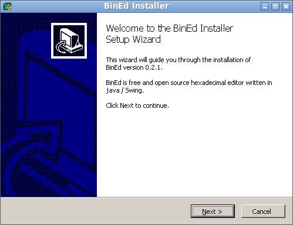
It will also create shortcuts in start menu in ExBin Project folder.

Specify in which directory you want to install the application or use default.

Installation on Linux depends on the variant of the system. Some systems allow to perform the installation with simple execution of the downloaded file.
Alternatively you might need to use shell commands:
For Debian-based systems command might be:
sudo dpkg -i bined_*.deb
For RPM-based systems command might be:
sudo rpm -i bined-*.rpm
For the general ZIP variant you'll need to extract content of the file into directory of your choice. This action is different on various operating systems - please search on the Internet for instructions on how to do this step on your operating system.
To start the application directly, there are multiple options. See the directory where your application is installed.
You can start "bined.exe" on MS Windows systems or on systems with Windows emulation (for example via Wine) installed.
"bined.sh" is a simple script which should work on Linux or Mac OSX systems. It might be necessary to assign execution bit on the file (for example via "chmod +x bined.sh" command).
On some systems it might be also possible to execute "bined.jar" depending on how and which variant of the Java is installed.
Application can be also started via command line, but this might also depend on the operating system, Java version and whether are Java tool applications setup for direct execution.
java -jar bined.jar
Application also accepts few command line parameters, like for opening specific file on start. Try "--help" parameter to see available commands.
BinEd is desktop application with typical layout.
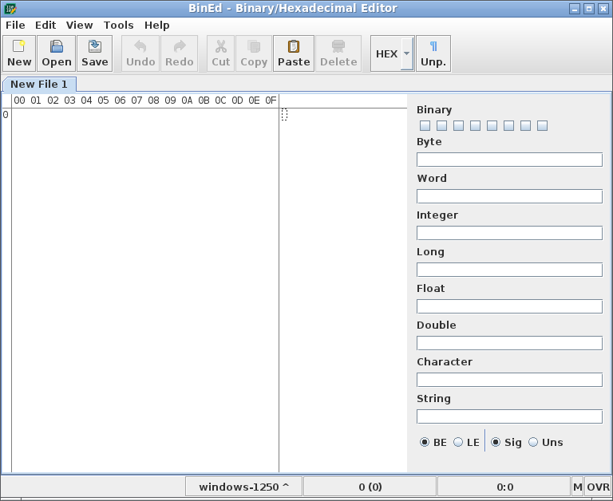
Application consists of (from top to bottom):
Main menu provides main access to available actions.
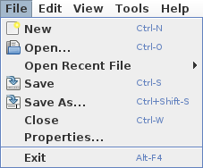
File menu contains actions to handle basic work with files:
Toolbar provides access to some of typically used actions.
In basic mode, data are shown as matrix of numeric codes and also as regular text at the same time.
Optionally there is header, which represents position offset for the particular code on the given column.
Row starts optionally by row position. Row position can be represented by numbers in octal, decimal or hexadecimal base independent on code base.
Popup menu is available with actions which depends on which section of the code area was clicked on.
Content parsing panel provides analysis of the data at the cursor position. Parsing panel can be shown/hidden with:
Menu / View / Show Parsing Panel
Currently, only simple list of values is available. Values are updated when cursor in code area is moved.
It's possible to edit the values and overwrite content of the document on the cursor position with ENTER key.
Values panel supports options for big and little endian - this affects order of bytes for multibyte values. Support for signed and unsigned variants of some values - first bit is typically used for negativity sign.
Status bar is bottom section of the main window.
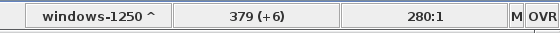
It has following 5 sections - from left to right.
Left click cycles throw set list of encodings.
Popup menu provides ability to select specific encoding from the list or to manage it.
Shows document size in specific code type and in brackets difference to size of the saved document.
If there is selection active in the document then it shows size of the selection to size of the document.
Tooltip shows document size in all three code types.
Popup menu allows selecting code type or to copy the value.
Shows current position of the cursor in the document as position in the document and position in the code.
If there is selection active in the document then it shows start and end position of the selection.
Tooltip shows cursor position in all three code types.
Popup menu allows selecting code type or to copy the value.
Shows currently used memory mode.
Modes are:
Tooltip shows full name of the memory mode.
Popup menu allows switching memory mode. This will close the document and reopen it in selected mode.
Following edit modes are supported:
It's possible to switch between insert and overwrite with single click on the status bar or with INSERT key
To create new file use:
Menu / File / New
To edit file use:
Menu / File / Open
File is show as code area as a sequence of codes and preview characters:
You can edit numerical codes, or you can edit preview characters via keyboard or using available actions.
When done with editing operations, save file:
Menu / File / Save
If changes you made to the file is not what you wanted to do, you can revert some number of last edit actions you performed.
TODO
Use this action to move cursor to specific position:
Menu / Edit / Go To
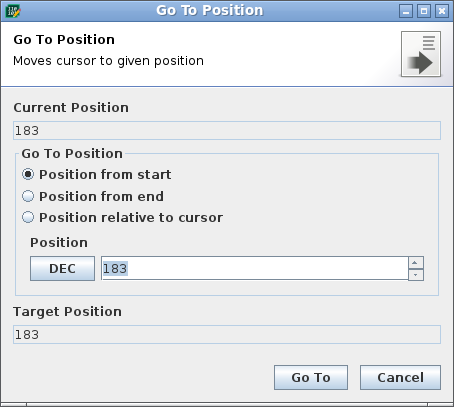
You can specify position relative to current position, start or end of the document. Position can be specified in octal, decimal or hexadecimal base.
Use this action to find specific text or sequence of codes:
Menu / Edit / Find
Menu / Edit / Replace
This will open quick search bar:
You can enter searched text or data and toggle match case and highlighting mode buttons.
You can switch between multiple matches if found.
Options button opens dialog with additional options:
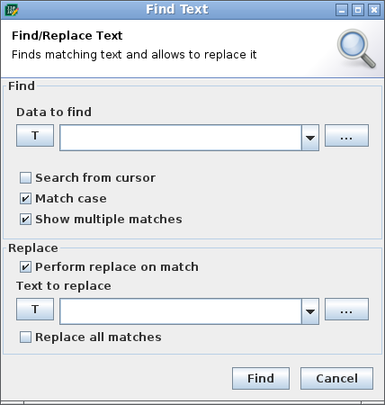
Use this action to insert data to current position:
Menu / Edit / Insert Data
Data will be inserted or will replace previous data depending on the current edit mode.
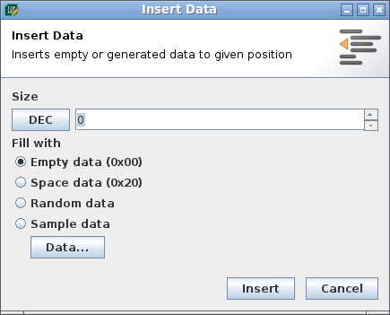
Length can be specified in octal, decimal or hexadecimal base.
Use this action to compare content of two files:
Menu / Tools / Compare Files
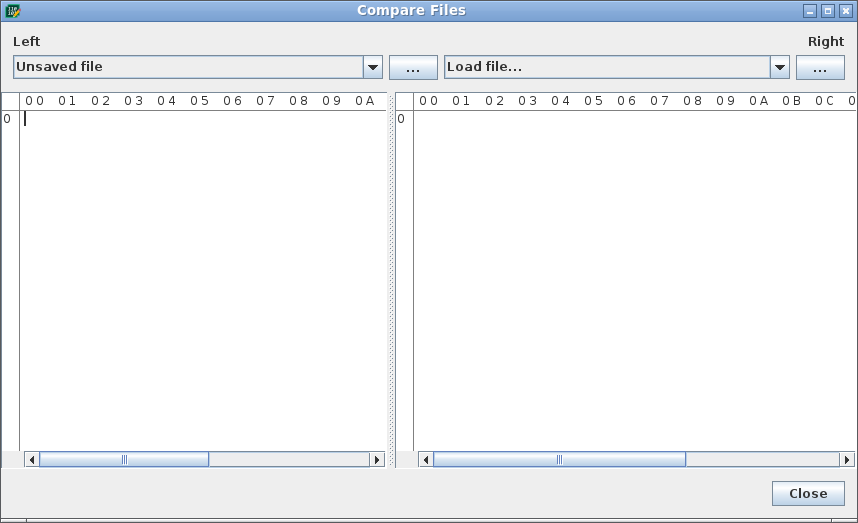
In left side of the code area there are shown position in the file. It's possible to choose code type for this position as octal, decimal or hexadecimal.
In hex code type codes above 10 are shown as characters A to F. You can choose if this codes will be upper or lower case.
Some characters don't have visual representation in the preview section. For example characters like:
This provides option to print substitute characters with different color instead to better visualize this particular characters.
This option provides ability to print some codes with different colors.
Currently, only single mode is available:
You can change font used in code area.
Menu / Tools / Set Font
Options / Appearance / Text Font
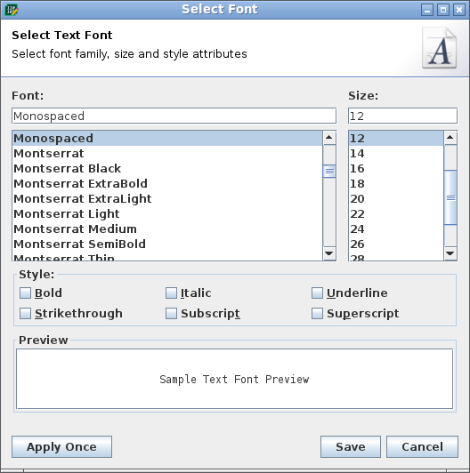
You can select specific family of the font, size in pixels, style parameters like bold and italic.
In preview section you can see how the selected font will look, or you can enter other text of your choice there.
Text preview section is showing data decoded to textual characters according to currently selected encoding. Method of conversion between RAW data and characters is described in so called encoding. Java supports universal UNICODE encodings as well as various ISO and platform specific encodings often tailored for specific country/language.
Encodings can be either fixed where single numeric code is represented as single character. Some encodings like for example UTF-8 uses codes with different length of codes to represent characters. Each character in textual preview section is decoded from particular position, therefore characters longer than single byte will overlap.
User can set list of encodings available for quick switching in encodings manager dialog.

It's possible to move/reorder encodings in the list and add another encoding.

Encodings can be filtered by name and/or country code.
Active encoding can be either selected by popup menu or cycled through by single click in the status bar.

Code area options allows setting various options related to code area.
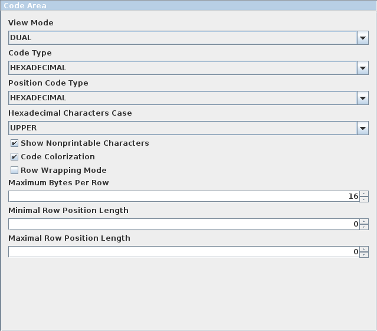
Maximum bytes per row allows setting how many codes / preview characters will be visible on the page.
In default mode (16) code area always shows 16 codes per row.
Alternative mode is to use (0) in which code area will fit as many codes per page to fit visible area.
Row position length parameters allows setting of behavior of row position codes.
In default mode (0, 0) row positions will have as many digits as needed for current size of the document.
Multiple layout profiles are supported. You can define your own or use one from templates.

Layout options specify positions of the printed data. Primary capability is to specify size and frequency of spacing between characters.
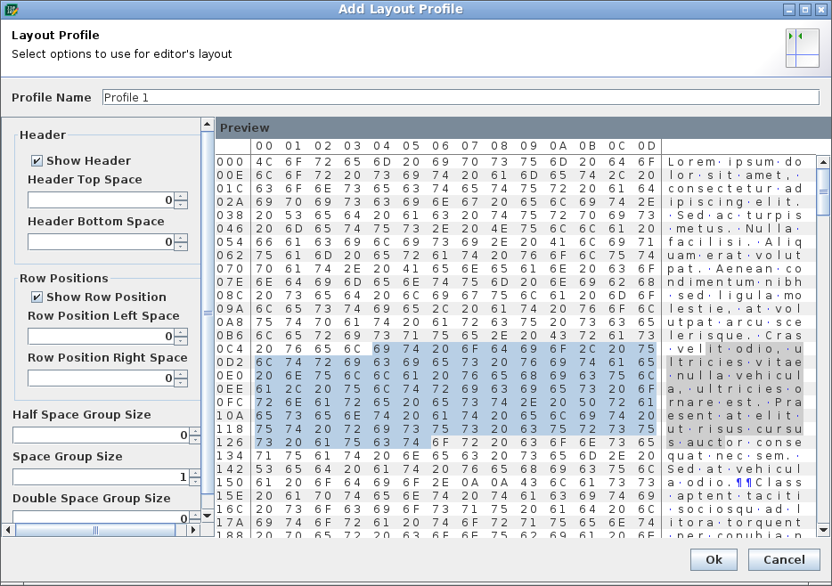
Multiple decoration profiles are supported. You can define your own or use one from templates.
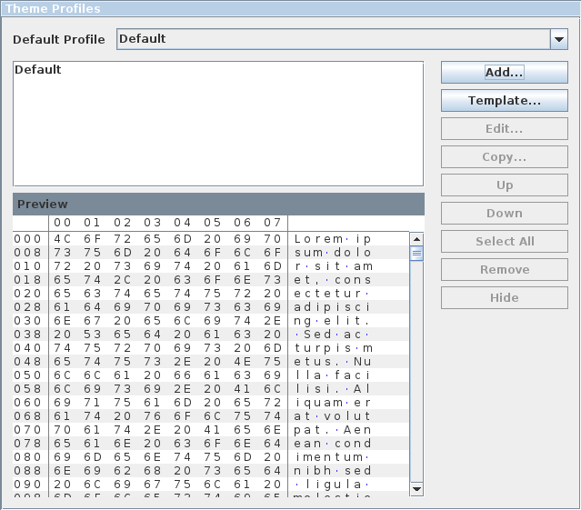
Decoration options allow specifying additional cosmetic entities, namely lines and shapes.
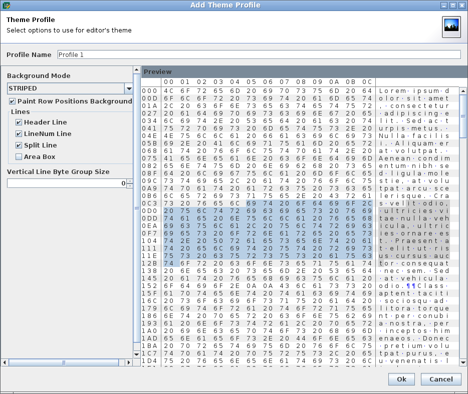
Multiple color profiles are supported. You can define your own or use one from templates.

It is possible to specify colors of text, background, decorations and make it specific for areas like selection or found matches. If color is not specified, default color from current Look and Feel is used.
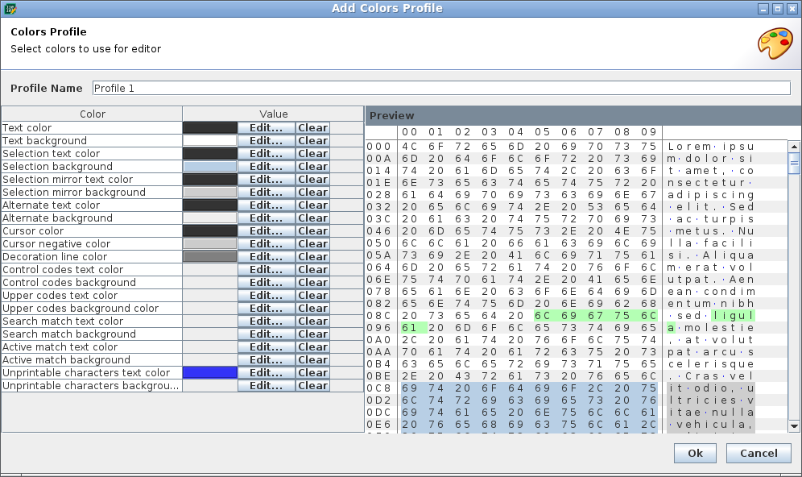
Help for the application is available on the project's website and current version is also included with the application.
It's possible to check if newer version of the stable version of the application is available.
Menu / Help / Check for Update
Check is performed automatically at the start of the application unless disabled in options:
Options / Start : Check for available updates on application start
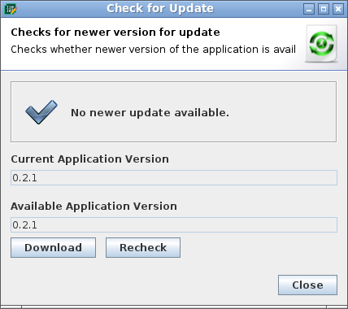
Press download button to be redirected to download page in the browser.
Automatic update is currently not supported.
You can show basic information about application with:
Menu / Help / About
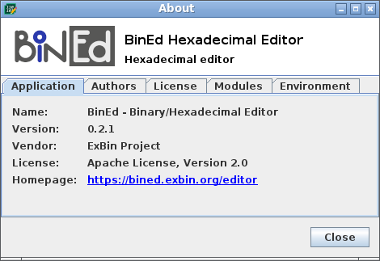
Project uses Apache License 2.0, see: